CODING AGENTS AS PIXEL WORLD MODELS
traex/DeepSeek-V4.1-Flash · mechanics_0031
点击播放 · 原生 RGB 像素
逐轮保存的候选
回放视频、检查图与代码变化。
每份候选均可单独播放。实际图片检查记录在下方工具轨迹中。
候选 01播放与检查图
点击播放 · 原生 RGB 像素
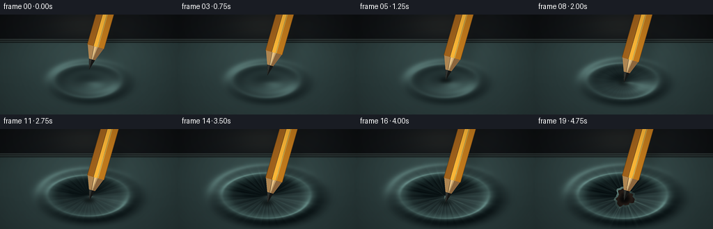
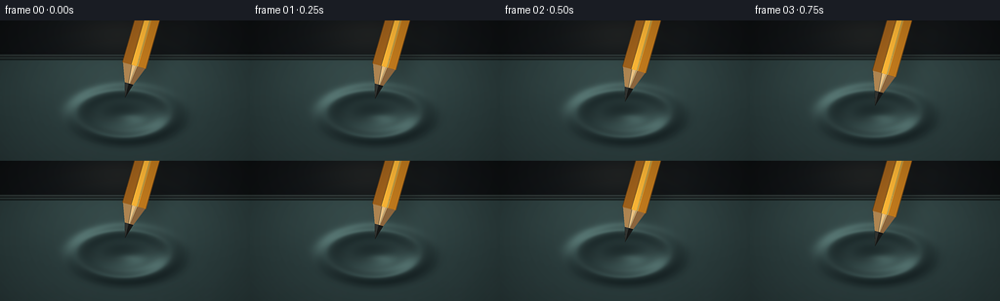
展开代码变化
--- 上一保存版本
+++ 本次保存版本
@@ -0,0 +1,436 @@
+from pathlib import Path
+import math
+
+import cv2
+import numpy as np
+from PIL import Image, ImageDraw, ImageFilter
+
+import artifact_io
+
+
+CASE_DIR = Path(__file__).resolve().parent
+WIDTH = 256
+HEIGHT = 144
+FRAMES = 20
+FPS = 4.0
+SS = 4
+W = WIDTH * SS
+H = HEIGHT * SS
+
+
+def smoothstep(value):
+ value = float(np.clip(value, 0.0, 1.0))
+ return value * value * (3.0 - 2.0 * value)
+
+
+def make_background():
+ yy, xx = np.mgrid[0:H, 0:W].astype(np.float32)
+ xn = xx / max(W - 1, 1)
+ yn = yy / max(H - 1, 1)
+
+ top = np.array([25.0, 29.0, 32.0], dtype=np.float32)
+ bottom = np.array([12.0, 16.0, 18.0], dtype=np.float32)
+ blend = np.clip(yn * 1.5, 0.0, 1.0)[..., None]
+ image = top * (1.0 - blend) + bottom * blend
+
+ glow = np.exp(-(((xn - 0.48) / 0.28) ** 2 + ((yn - 0.10) / 0.22) ** 2) * 2.0)
+ image += glow[..., None] * np.array([13.0, 12.0, 9.0], dtype=np.float32)
+
+ vignette = np.clip(1.0 - 0.42 * (((xn - 0.5) / 0.68) ** 2 + ((yn - 0.48) / 0.78) ** 2), 0.50, 1.0)
+ image *= vignette[..., None]
+ return image
+
+
+def make_rubber_and_hole(frame_index):
+ yy, xx = np.mgrid[0:H, 0:W].astype(np.float32)
+ xn = xx / max(W - 1, 1)
+ yn = yy / max(H - 1, 1)
+
+ # Contact begins around 1.5 s and the elastic dimple deepens through 4 s.
+ press = smoothstep((frame_index - 5.5) / 9.5)
+ tear = smoothstep((frame_index - 15.2) / 3.8)
+
+ cx = 128.0 * SS
+ cy = 96.5 * SS
+ sx = (31.0 + 10.0 * press) * SS
+ sy = (15.5 + 5.5 * press) * SS
+ dx = xx - cx
+ dy = yy - cy
+ r = np.sqrt((dx / sx) ** 2 + (dy / sy) ** 2)
+
+ depth = (1.5 + 20.0 * press) * SS
+ dimple = -depth * np.exp(-2.15 * r * r)
+ rim = (1.2 + 3.1 * press) * SS * np.exp(-((r - 1.55) / 0.38) ** 2)
+ height = dimple + rim
+
+ gx = cv2.Sobel(height, cv2.CV_32F, 1, 0, ksize=3) / (8.0 * SS)
+ gy = cv2.Sobel(height, cv2.CV_32F, 0, 1, ksize=3) / (8.0 * SS)
+ nx = -gx * 11.0
+ ny = -gy * 11.0
+ nz = np.ones_like(nx)
+ norm = np.sqrt(nx * nx + ny * ny + nz * nz)
+ nx, ny, nz = nx / norm, ny / norm, nz / norm
+
+ light = np.array([-0.54, -0.66, 0.92], dtype=np.float32)
+ light /= np.linalg.norm(light)
+ diffuse = np.clip(nx * light[0] + ny * light[1] + nz * light[2], 0.0, 1.0)
+ half = light + np.array([0.0, 0.0, 1.0], dtype=np.float32)
+ half /= np.linalg.norm(half)
+ spec = np.clip(nx * half[0] + ny * half[1] + nz * half[2], 0.0, 1.0) ** 24
+
+ rng = np.random.default_rng(31847)
+ fine = rng.normal(0.0, 1.0, (H, W)).astype(np.float32)
+ fine = cv2.GaussianBlur(fine, (0, 0), 1.35 * SS)
+ broad = rng.normal(0.0, 1.0, (H // (2 * SS), W // (2 * SS))).astype(np.float32)
+ broad = cv2.resize(broad, (W, H), interpolation=cv2.INTER_CUBIC)
+ broad = cv2.GaussianBlur(broad, (0, 0), 9.0 * SS)
+ texture = fine * 2.8 + broad * 5.2
+
+ back_light = np.exp(-(((xn - 0.50) / 0.40) ** 2 + ((yn - 0.37) / 0.28) ** 2))
+ base = np.empty((H, W, 3), dtype=np.float32)
+ base[..., 0] = 31.0 + 11.0 * back_light
+ base[..., 1] = 45.0 + 14.0 * back_light
+ base[..., 2] = 46.0 + 13.0 * back_light
+ base += (diffuse[..., None] - 0.58) * np.array([40.0, 49.0, 47.0], dtype=np.float32)
+ base += spec[..., None] * np.array([38.0, 51.0, 48.0], dtype=np.float32)
+ base += texture[..., None] * np.array([0.62, 0.80, 0.78], dtype=np.float32)
+
+ theta = np.arctan2(dy, dx)
+ radial_zone = np.exp(-((r - 0.90) / 0.78) ** 2) * press
+ stretch_lines = (
+ 0.62 * np.cos(27.0 * theta + 0.7)
+ + 0.32 * np.cos(49.0 * theta - 1.4)
+ + 0.22 * np.cos(73.0 * theta + 0.2)
+ )
+ stretch = radial_zone * stretch_lines
+ base += stretch[..., None] * np.array([7.2, 9.5, 9.0], dtype=np.float32)
+
+ tension_ring = np.exp(-((r - 1.48) / 0.24) ** 2) * press
+ base += tension_ring[..., None] * np.array([19.0, 27.0, 25.0], dtype=np.float32)
+
+ # The back clamp makes the sheet read as taut rather than as a loose floor.
+ top = 39.0 * SS
+ edge_band = np.clip((yy - top) / (2.2 * SS), 0.0, 1.0)
+ above = yy < top
+ image = make_background()
+ sheet = np.clip(base * edge_band[..., None], 0.0, 255.0)
+ image = np.where(above[..., None], image, sheet)
+
+ bar_top = 34.5 * SS
+ bar_bottom = top + 0.7 * SS
+ bar = (yy >= bar_top) & (yy <= bar_bottom)
+ bar_t = np.clip((yy - bar_top) / max(bar_bottom - bar_top, 1.0), 0.0, 1.0)
+ metal = np.empty_like(base)
+ metal[..., 0] = 18.0 + 16.0 * bar_t
+ metal[..., 1] = 23.0 + 18.0 * bar_t
+ metal[..., 2] = 24.0 + 17.0 * bar_t
+ bar_highlight = np.exp(-((yy - (bar_top + 1.1 * SS)) / (0.7 * SS)) ** 2)
+ metal += bar_highlight[..., None] * np.array([35.0, 39.0, 37.0], dtype=np.float32)
+ image = np.where(bar[..., None], metal, image)
+ lip = (yy >= top - 1.0 * SS) & (yy < top)
+ image = np.where(lip[..., None], image + np.array([21.0, 28.0, 26.0]), image)
+
+ # Pencil shadow, projected down and to the right.
+ shadow_mask = Image.new("L", (W, H), 0)
+ shadow_draw = ImageDraw.Draw(shadow_mask)
+ tip_x, tip_y = pencil_tip(frame_index)
+ u = np.array([0.275, -0.961], dtype=np.float32)
+ v = np.array([0.961, 0.275], dtype=np.float32)
+ p0 = np.array([tip_x, tip_y], dtype=np.float32) + u * 28.0 * SS + np.array([10.0, 8.0]) * SS
+ p1 = p0 + u * 265.0 * SS
+ radius = 15.5 * SS
+ shadow_poly = [
+ tuple(p0 + v * radius),
+ tuple(p1 + v * radius),
+ tuple(p1 - v * radius),
+ tuple(p0 - v * radius),
+ ]
+ shadow_draw.polygon(shadow_poly, fill=145)
+ shadow_mask = shadow_mask.filter(ImageFilter.GaussianBlur(9.0 * SS))
+ shadow_alpha = np.asarray(shadow_mask, dtype=np.float32) / 255.0
+ image *= (1.0 - 0.34 * shadow_alpha[..., None])
+
+ # Soft ambient shadow under the approaching tip.
+ gap = max(0.0, 96.5 - tip_y / SS)
+ amb_alpha = 0.31 * (1.0 - min(gap / 20.0, 1.0)) + 0.06
+ amb_mask = Image.new("L", (W, H), 0)
+ amb_draw = ImageDraw.Draw(amb_mask)
+ amb_w = (17.0 + 0.42 * gap) * SS
+ amb_h = (5.0 + 0.13 * gap) * SS
+ amb_draw.ellipse(
+ (cx - amb_w, 96.5 * SS - amb_h, cx + amb_w, 96.5 * SS + amb_h),
+ fill=int(255 * amb_alpha),
+ )
+ amb_mask = amb_mask.filter(ImageFilter.GaussianBlur(5.0 * SS))
+ amb = np.asarray(amb_mask, dtype=np.float32) / 255.0
+ image *= (1.0 - 0.52 * amb[..., None])
+
+ # Tear: a dark cavity with an irregular stretched lip and radial creases.
+ if frame_index >= 16:
+ q = smoothstep((frame_index - 15.5) / 3.5)
+ hole_cx = cx + 1.2 * SS
+ hole_cy = cy + 2.4 * SS
+ hdx = xx - hole_cx
+ hdy = yy - hole_cy
+ hr = np.sqrt(hdx * hdx + hdy * hdy)
+ htheta = np.arctan2(hdy, hdx)
+ base_radius = (1.1 + 11.0 * q) * SS
+ radius_theta = base_radius * (
+ 1.0
+ + 0.16 * np.sin(3.0 * htheta + 0.8)
+ + 0.09 * np.sin(7.0 * htheta - 1.1)
+ + 0.045 * np.sin(13.0 * htheta + 0.4)
+ )
+ hole = hr < radius_theta
+ lip_outer = radius_theta + (1.8 + 1.2 * q) * SS
+ lip = (hr >= radius_theta) & (hr < lip_outer)
+
+ cavity = np.empty_like(image)
+ depth_t = np.clip(hr / np.maximum(radius_theta, 1.0), 0.0, 1.0)
+ cavity[..., 0] = 8.0 + 18.0 * depth_t
+ cavity[..., 1] = 10.0 + 10.0 * depth_t
+ cavity[..., 2] = 10.0 + 8.0 * depth_t
+ cavity += (fine[..., None] + 0.6) * np.array([3.2, 2.4, 2.0], dtype=np.float32)
+ cavity_glow = np.exp(-((hr / np.maximum(base_radius, 1.0) - 0.78) / 0.25) ** 2)
+ cavity += cavity_glow[..., None] * np.array([14.0, 10.0, 7.0], dtype=np.float32)
+ image = np.where(hole[..., None], cavity, image)
+
+ lip_light = 0.42 + 0.58 * np.clip(np.cos(htheta + 2.25), 0.0, 1.0)
+ lip_color = (
+ np.array([81.0, 105.0, 99.0], dtype=np.float32)[None, None, :] * lip_light[..., None]
+ + np.array([20.0, 29.0, 28.0], dtype=np.float32)[None, None, :]
+ )
+ lip_mix = (0.45 + 0.38 * lip_light)[..., None]
+ image = np.where(lip[..., None], image * (1.0 - lip_mix) + lip_color * lip_mix, image)
+
+ crease_angles = np.array([0.35, 1.15, 2.05, 2.95, 3.85, 4.75, 5.55], dtype=np.float32)
+ crease = np.zeros_like(hr)
+ for angle in crease_angles:
+ delta = np.arctan2(np.sin(htheta - angle), np.cos(htheta - angle))
+ crease += np.exp(-(delta / 0.035) ** 2)
+ crease *= (
+ (hr > radius_theta)
+ * (hr < radius_theta + (23.0 + 12.0 * q) * SS)
+ * np.exp(-(hr - radius_theta) / (16.0 * SS))
+ )
+ image += crease[..., None] * np.array([24.0, 30.0, 27.0], dtype=np.float32)
+
+ return image
+
+
+def pencil_tip(frame_index):
+ cx = 128.0 * SS
+ if frame_index <= 6:
+ approach = smoothstep(frame_index / 6.0)
+ tip_y = (79.0 + 17.0 * approach) * SS
+ else:
+ press = smoothstep((frame_index - 5.5) / 9.5)
+ tear = smoothstep((frame_index - 15.2) / 3.8)
+ tip_y = (96.0 + 10.6 * press - 3.5 * tear) * SS
+ return cx, tip_y
+
+
+def polygon_with_alpha(draw, points, fill, alpha=255):
+ draw.polygon(points, fill=tuple(fill) + (alpha,))
+
+
+def draw_pencil(image, frame_index):
+ layer = Image.new("RGBA", (W, H), (0, 0, 0, 0))
+ draw = ImageDraw.Draw(layer)
+ tip = np.array(pencil_tip(frame_index), dtype=np.float32)
+ u = np.array([0.275, -0.961], dtype=np.float32)
+ v = np.array([0.961, 0.275], dtype=np.float32)
+ u /= np.linalg.norm(u)
+ v /= np.linalg.norm(v)
+
+ tip_len = 15.0 * SS
+ wood_len = 19.0 * SS
+ body_start = tip_len + wood_len
+ body_radius = 12.4 * SS
+ graphite_radius = 4.45 * SS
+ wood_radius = 11.7 * SS
+
+ p_tip = tip
+ p_gbase = tip + u * tip_len
+ p_wbase = p_gbase
+ p_body = tip + u * body_start
+ p_far = tip + u * 280.0 * SS
+
+ # Thin contact shadow immediately under the graphite point.
+ if frame_index >= 5:
+ shadow = Image.new("RGBA", (W, H), (0, 0, 0, 0))
+ sd = ImageDraw.Draw(shadow)
+ sd.ellipse(
+ (p_tip[0] - 8.0 * SS, p_tip[1] - 2.8 * SS, p_tip[0] + 8.0 * SS, p_tip[1] + 3.2 * SS),
+ fill=(2, 6, 6, 165),
+ )
+ shadow = shadow.filter(ImageFilter.GaussianBlur(2.5 * SS))
+ layer.alpha_composite(shadow)
+ draw = ImageDraw.Draw(layer)
+
+ # Graphite cone: almost black, with a cool highlight on the left.
+ polygon_with_alpha(
+ draw,
+ [tuple(p_tip), tuple(p_gbase + v * graphite_radius), tuple(p_gbase - v * graphite_radius)],
+ (22, 23, 22),
+ )
+ polygon_with_alpha(
+ draw,
+ [tuple(p_tip + u * 1.2 * SS), tuple(p_gbase - v * graphite_radius * 0.93), tuple(p_gbase - v * 0.4 * SS)],
+ (49, 51, 48),
+ )
+ polygon_with_alpha(
+ draw,
+ [tuple(p_gbase - v * graphite_radius * 0.92), tuple(p_gbase - v * 1.6 * SS), tuple(p_gbase + u * 0.3 * SS)],
+ (67, 69, 64),
+ 210,
+ )
+
+ # Exposed cedar cone, split into facets.
+ wood_poly = [
+ tuple(p_wbase + v * graphite_radius),
+ tuple(p_body + v * wood_radius),
+ tuple(p_body - v * wood_radius),
+ tuple(p_wbase - v * graphite_radius),
+ ]
+ polygon_with_alpha(draw, wood_poly, (194, 153, 98))
+ polygon_with_alpha(
+ draw,
+ [
+ tuple(p_wbase + v * graphite_radius),
+ tuple(p_body + v * wood_radius),
+ tuple(p_body + v * 3.0 * SS),
+ tuple(p_wbase + v * 0.7 * SS),
+ ],
+ (139, 101, 61),
+ )
+ polygon_with_alpha(
+ draw,
+ [
+ tuple(p_wbase + v * 0.7 * SS),
+ tuple(p_body + v * 3.0 * SS),
+ tuple(p_body - v * 2.6 * SS),
+ tuple(p_wbase - v * 0.7 * SS),
+ ],
+ (230, 190, 128),
+ )
+ polygon_with_alpha(
+ draw,
+ [
+ tuple(p_wbase - v * 0.7 * SS),
+ tuple(p_body - v * 2.6 * SS),
+ tuple(p_body - v * wood_radius),
+ tuple(p_wbase - v * graphite_radius),
+ ],
+ (173, 132, 81),
+ )
+ for offset, color, width in [(-0.55, (116, 80, 48, 120), 0.7), (0.45, (249, 211, 150, 100), 0.55)]:
+ a = p_wbase + v * offset * SS
+ b = p_body + v * (offset * 4.4) * SS
+ draw.line([tuple(a), tuple(b)], fill=color, width=max(1, int(width * SS)))
+
+ # Painted hexagonal body with three visible longitudinal faces.
+ polygon_with_alpha(
+ draw,
+ [
+ tuple(p_body + v * body_radius),
+ tuple(p_far + v * body_radius),
+ tuple(p_far - v * body_radius),
+ tuple(p_body - v * body_radius),
+ ],
+ (211, 137, 31),
+ )
+ polygon_with_alpha(
+ draw,
+ [
+ tuple(p_body - v * body_radius),
+ tuple(p_far - v * body_radius),
+ tuple(p_far - v * 3.1 * SS),
+ tuple(p_body - v * 3.1 * SS),
+ ],
+ (158, 96, 27),
+ )
+ polygon_with_alpha(
+ draw,
+ [
+ tuple(p_body - v * 3.1 * SS),
+ tuple(p_far - v * 3.1 * SS),
+ tuple(p_far + v * 4.2 * SS),
+ tuple(p_body + v * 4.2 * SS),
+ ],
+ (246, 177, 52),
+ )
+ polygon_with_alpha(
+ draw,
+ [
+ tuple(p_body + v * 4.2 * SS),
+ tuple(p_far + v * 4.2 * SS),
+ tuple(p_far + v * body_radius),
+ tuple(p_body + v * body_radius),
+ ],
+ (190, 119, 27),
+ )
+ # Crisp painted edge and a narrow lacquer highlight.
+ draw.line(
+ [tuple(p_body + v * body_radius), tuple(p_far + v * body_radius)],
+ fill=(108, 65, 17, 220),
+ width=max(1, int(0.8 * SS)),
+ )
+ draw.line(
+ [tuple(p_body - v * body_radius), tuple(p_far - v * body_radius)],
+ fill=(100, 61, 18, 210),
+ width=max(1, int(0.8 * SS)),
+ )
+ draw.line(
+ [tuple(p_body + v * 3.15 * SS), tuple(p_far + v * 3.15 * SS)],
+ fill=(255, 218, 104, 150),
+ width=max(1, int(1.0 * SS)),
+ )
+ draw.line(
+ [tuple(p_body - v * 3.0 * SS), tuple(p_far - v * 3.0 * SS)],
+ fill=(128, 76, 19, 120),
+ width=max(1, int(0.7 * SS)),
+ )
+
+ # A tiny graphite glint keeps the point readable against the dark rubber.
+ glint = Image.new("RGBA", (W, H), (0, 0, 0, 0))
+ gd = ImageDraw.Draw(glint)
+ ga = p_tip + u * 4.0 * SS - v * 1.5 * SS
+ gb = p_tip + u * 7.0 * SS - v * 2.0 * SS
+ gd.line([tuple(ga), tuple(gb)], fill=(156, 162, 153, 160), width=max(1, int(0.7 * SS)))
+ glint = glint.filter(ImageFilter.GaussianBlur(0.35 * SS))
+ layer.alpha_composite(glint)
+
+ image.alpha_composite(layer)
+
+
+def render_frame(frame_index):
+ image = Image.fromarray(np.clip(make_rubber_and_hole(frame_index), 0, 255).astype(np.uint8)).convert("RGBA")
+ draw_pencil(image, frame_index)
+ image = image.convert("RGB")
+
+ arr = np.asarray(image, dtype=np.float32)
+ yy, xx = np.mgrid[0:H, 0:W].astype(np.float32)
+ xn = xx / max(W - 1, 1)
+ yn = yy / max(H - 1, 1)
+ vignette = np.clip(1.0 - 0.28 * (((xn - 0.5) / 0.62) ** 2 + ((yn - 0.52) / 0.82) ** 2), 0.62, 1.0)
+ arr *= vignette[..., None]
+
+ # Slight highlight bloom in the upper-left adds material separation without washing out detail.
+ bright = np.clip((arr.max(axis=2) - 150.0) / 105.0, 0.0, 1.0)
+ bloom = cv2.GaussianBlur(bright, (0, 0), 5.0 * SS)
+ arr += bloom[..., None] * np.array([11.0, 10.0, 5.0], dtype=np.float32)
+
+ small = Image.fromarray(np.clip(arr, 0, 255).astype(np.uint8), "RGB")
+ small = small.resize((WIDTH, HEIGHT), Image.Resampling.LANCZOS)
+ small = small.filter(ImageFilter.UnsharpMask(radius=0.55, percent=42, threshold=2))
+ return np.asarray(small, dtype=np.uint8)
+
+
+def main():
+ frames = [render_frame(index) for index in range(FRAMES)]
+ artifact_io.save(frames, CASE_DIR)
+
+
+if __name__ == "__main__":
+ main()
候选 02播放与检查图
点击播放 · 原生 RGB 像素

展开代码变化
--- 上一保存版本
+++ 本次保存版本
@@ -47,18 +47,18 @@
yn = yy / max(H - 1, 1)
# Contact begins around 1.5 s and the elastic dimple deepens through 4 s.
- press = smoothstep((frame_index - 5.5) / 9.5)
- tear = smoothstep((frame_index - 15.2) / 3.8)
+ press = smoothstep((frame_index - 5.0) / 9.0)
+ tear = smoothstep((frame_index - 13.5) / 4.5)
cx = 128.0 * SS
cy = 96.5 * SS
- sx = (31.0 + 10.0 * press) * SS
- sy = (15.5 + 5.5 * press) * SS
+ sx = (36.0 + 12.0 * press) * SS
+ sy = (16.0 + 6.5 * press) * SS
dx = xx - cx
dy = yy - cy
r = np.sqrt((dx / sx) ** 2 + (dy / sy) ** 2)
- depth = (1.5 + 20.0 * press) * SS
+ depth = (1.5 + 23.0 * press) * SS
dimple = -depth * np.exp(-2.15 * r * r)
rim = (1.2 + 3.1 * press) * SS * np.exp(-((r - 1.55) / 0.38) ** 2)
height = dimple + rim
@@ -88,12 +88,12 @@
back_light = np.exp(-(((xn - 0.50) / 0.40) ** 2 + ((yn - 0.37) / 0.28) ** 2))
base = np.empty((H, W, 3), dtype=np.float32)
- base[..., 0] = 31.0 + 11.0 * back_light
- base[..., 1] = 45.0 + 14.0 * back_light
- base[..., 2] = 46.0 + 13.0 * back_light
- base += (diffuse[..., None] - 0.58) * np.array([40.0, 49.0, 47.0], dtype=np.float32)
- base += spec[..., None] * np.array([38.0, 51.0, 48.0], dtype=np.float32)
- base += texture[..., None] * np.array([0.62, 0.80, 0.78], dtype=np.float32)
+ base[..., 0] = 39.0 + 14.0 * back_light
+ base[..., 1] = 57.0 + 18.0 * back_light
+ base[..., 2] = 58.0 + 17.0 * back_light
+ base += (diffuse[..., None] - 0.58) * np.array([51.0, 62.0, 59.0], dtype=np.float32)
+ base += spec[..., None] * np.array([49.0, 64.0, 60.0], dtype=np.float32)
+ base += texture[..., None] * np.array([0.78, 0.98, 0.95], dtype=np.float32)
theta = np.arctan2(dy, dx)
radial_zone = np.exp(-((r - 0.90) / 0.78) ** 2) * press
@@ -103,20 +103,20 @@
+ 0.22 * np.cos(73.0 * theta + 0.2)
)
stretch = radial_zone * stretch_lines
- base += stretch[..., None] * np.array([7.2, 9.5, 9.0], dtype=np.float32)
+ base += stretch[..., None] * np.array([11.0, 14.0, 13.0], dtype=np.float32)
tension_ring = np.exp(-((r - 1.48) / 0.24) ** 2) * press
- base += tension_ring[..., None] * np.array([19.0, 27.0, 25.0], dtype=np.float32)
+ base += tension_ring[..., None] * np.array([25.0, 34.0, 31.0], dtype=np.float32)
# The back clamp makes the sheet read as taut rather than as a loose floor.
- top = 39.0 * SS
+ top = 31.0 * SS
edge_band = np.clip((yy - top) / (2.2 * SS), 0.0, 1.0)
above = yy < top
image = make_background()
sheet = np.clip(base * edge_band[..., None], 0.0, 255.0)
image = np.where(above[..., None], image, sheet)
- bar_top = 34.5 * SS
+ bar_top = 26.5 * SS
bar_bottom = top + 0.7 * SS
bar = (yy >= bar_top) & (yy <= bar_bottom)
bar_t = np.clip((yy - bar_top) / max(bar_bottom - bar_top, 1.0), 0.0, 1.0)
@@ -166,15 +166,15 @@
image *= (1.0 - 0.52 * amb[..., None])
# Tear: a dark cavity with an irregular stretched lip and radial creases.
- if frame_index >= 16:
- q = smoothstep((frame_index - 15.5) / 3.5)
+ if frame_index >= 13:
+ q = smoothstep((frame_index - 13.0) / 6.0)
hole_cx = cx + 1.2 * SS
hole_cy = cy + 2.4 * SS
hdx = xx - hole_cx
hdy = yy - hole_cy
hr = np.sqrt(hdx * hdx + hdy * hdy)
htheta = np.arctan2(hdy, hdx)
- base_radius = (1.1 + 11.0 * q) * SS
+ base_radius = (0.8 + 12.5 * q) * SS
radius_theta = base_radius * (
1.0
+ 0.16 * np.sin(3.0 * htheta + 0.8)
@@ -182,7 +182,7 @@
+ 0.045 * np.sin(13.0 * htheta + 0.4)
)
hole = hr < radius_theta
- lip_outer = radius_theta + (1.8 + 1.2 * q) * SS
+ lip_outer = radius_theta + (1.5 + 1.6 * q) * SS
lip = (hr >= radius_theta) & (hr < lip_outer)
cavity = np.empty_like(image)
@@ -224,9 +224,9 @@
approach = smoothstep(frame_index / 6.0)
tip_y = (79.0 + 17.0 * approach) * SS
else:
- press = smoothstep((frame_index - 5.5) / 9.5)
- tear = smoothstep((frame_index - 15.2) / 3.8)
- tip_y = (96.0 + 10.6 * press - 3.5 * tear) * SS
+ press = smoothstep((frame_index - 5.0) / 9.0)
+ tear = smoothstep((frame_index - 13.5) / 4.5)
+ tip_y = (96.0 + 9.0 * press - 2.8 * tear) * SS
return cx, tip_y
@@ -257,7 +257,7 @@
p_far = tip + u * 280.0 * SS
# Thin contact shadow immediately under the graphite point.
- if frame_index >= 5:
+ if frame_index >= 4:
shadow = Image.new("RGBA", (W, H), (0, 0, 0, 0))
sd = ImageDraw.Draw(shadow)
sd.ellipse(
@@ -421,7 +421,7 @@
bloom = cv2.GaussianBlur(bright, (0, 0), 5.0 * SS)
arr += bloom[..., None] * np.array([11.0, 10.0, 5.0], dtype=np.float32)
- small = Image.fromarray(np.clip(arr, 0, 255).astype(np.uint8), "RGB")
+ small = Image.fromarray(np.clip(arr, 0, 255).astype(np.uint8))
small = small.resize((WIDTH, HEIGHT), Image.Resampling.LANCZOS)
small = small.filter(ImageFilter.UnsharpMask(radius=0.55, percent=42, threshold=2))
return np.asarray(small, dtype=np.uint8)
候选 03播放与检查图

候选 04播放与检查图
点击播放 · 原生 RGB 像素

展开代码变化
--- 上一保存版本
+++ 本次保存版本
@@ -145,14 +145,14 @@
tuple(p1 - v * radius),
tuple(p0 - v * radius),
]
- shadow_draw.polygon(shadow_poly, fill=145)
- shadow_mask = shadow_mask.filter(ImageFilter.GaussianBlur(9.0 * SS))
+ shadow_draw.polygon(shadow_poly, fill=110)
+ shadow_mask = shadow_mask.filter(ImageFilter.GaussianBlur(12.0 * SS))
shadow_alpha = np.asarray(shadow_mask, dtype=np.float32) / 255.0
- image *= (1.0 - 0.34 * shadow_alpha[..., None])
+ image *= (1.0 - 0.24 * shadow_alpha[..., None])
# Soft ambient shadow under the approaching tip.
gap = max(0.0, 96.5 - tip_y / SS)
- amb_alpha = 0.31 * (1.0 - min(gap / 20.0, 1.0)) + 0.06
+ amb_alpha = 0.21 * (1.0 - min(gap / 20.0, 1.0)) + 0.04
amb_mask = Image.new("L", (W, H), 0)
amb_draw = ImageDraw.Draw(amb_mask)
amb_w = (17.0 + 0.42 * gap) * SS
@@ -163,7 +163,7 @@
)
amb_mask = amb_mask.filter(ImageFilter.GaussianBlur(5.0 * SS))
amb = np.asarray(amb_mask, dtype=np.float32) / 255.0
- image *= (1.0 - 0.52 * amb[..., None])
+ image *= (1.0 - 0.40 * amb[..., None])
# Tear: a dark cavity with an irregular stretched lip and radial creases.
if frame_index >= 13:
@@ -215,6 +215,23 @@
)
image += crease[..., None] * np.array([24.0, 30.0, 27.0], dtype=np.float32)
+ # A few static dust grains make the surface scale legible.
+ dust = Image.new("RGBA", (W, H), (0, 0, 0, 0))
+ dust_draw = ImageDraw.Draw(dust)
+ grains = [
+ (34, 118, 2.0, 85), (58, 131, 1.3, 65), (84, 62, 1.2, 62),
+ (178, 59, 1.6, 70), (215, 111, 1.4, 74), (235, 88, 1.0, 58),
+ (17, 74, 1.1, 50), (102, 136, 1.4, 66), (200, 136, 1.2, 55),
+ ]
+ for x, y, radius, alpha in grains:
+ px, py = x * SS, y * SS
+ rr = radius * SS
+ dust_draw.ellipse((px - rr, py - rr, px + rr, py + rr), fill=(135, 148, 138, alpha))
+ image = np.asarray(Image.fromarray(np.clip(image, 0, 255).astype(np.uint8)).convert("RGBA"))
+ base_img = Image.fromarray(image, "RGBA")
+ base_img.alpha_composite(dust)
+ image = np.asarray(base_img.convert("RGB"), dtype=np.float32)
+
return image
@@ -222,11 +239,11 @@
cx = 128.0 * SS
if frame_index <= 6:
approach = smoothstep(frame_index / 6.0)
- tip_y = (79.0 + 17.0 * approach) * SS
+ tip_y = (73.0 + 23.0 * approach) * SS
else:
press = smoothstep((frame_index - 5.0) / 9.0)
tear = smoothstep((frame_index - 13.5) / 4.5)
- tip_y = (96.0 + 9.0 * press - 2.8 * tear) * SS
+ tip_y = (96.0 + 8.0 * press - 2.4 * tear) * SS
return cx, tip_y
候选 05播放与检查图
点击播放 · 原生 RGB 像素

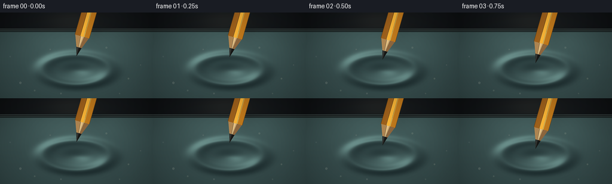
展开代码变化
--- 上一保存版本
+++ 本次保存版本
@@ -167,7 +167,7 @@
# Tear: a dark cavity with an irregular stretched lip and radial creases.
if frame_index >= 13:
- q = smoothstep((frame_index - 13.0) / 6.0)
+ q = 0.30 * smoothstep((frame_index - 13.0) / 4.0) + 0.70 * smoothstep((frame_index - 14.8) / 4.2)
hole_cx = cx + 1.2 * SS
hole_cy = cy + 2.4 * SS
hdx = xx - hole_cx
可观测工具轨迹
实际执行的命令与返回图片。
命令 1exit 0
/bin/bash -c "sed -n '1,240p' prompt.txt"
命令 2exit 0
/bin/bash -c "sed -n '1,280p' GENERATION_RULES.md"
命令 3exit 0
/bin/bash -c 'cat task_spec.json'
命令 4exit 0
/bin/bash -c "printf '%s\\n' '--- files ---'; rg --files -g '"'!*.mp4'"' -g '"'!*.mov'"' -g '"'!*.png'"' -g '"'!*.jpg'"' | sed -n '1,240p'; printf '%s\\n' '--- tools ---'; command -v ffmpeg; command -v blender; command -v python3; python3 - <<'PY' mods=['numpy','PIL','imageio','matplotlib','cv2','cairo','moderngl','pygame'] for m in mods: try: __import__(m); print(m,'yes') except Exception as e: print(m,'no') PY"
命令 5exit 0
/bin/bash -c "sed -n '1,300p' artifact_io.py"
命令 6exit 0
/bin/bash -c 'git status --short'
命令 7exit 1
/bin/bash -c 'MPLCONFIGDIR=.tmp/mpl python3 generate.py'
命令 8exit 0
/bin/bash -c 'MPLCONFIGDIR=.tmp/mpl python3 generate.py'
命令 9exit 0
/bin/bash -c "python3 - <<'PY'
from PIL import Image
import numpy as np
for i in [0,6,12,16,19]:
a=np.asarray(Image.open(f'frames/{i:02d}.png'))
print(i,a.mean((0,1)),np.percentile(a.mean(2),[5,50,95,99]))
PY"命令 10exit 0
/bin/bash -c "python3 - <<'PY'
from PIL import Image
import numpy as np
for i in [0,12,19]:
a=np.asarray(Image.open(f'frames/{i:02d}.png'))
m=(a[:,:,0]>110)&(a[:,:,0]>a[:,:,1]*1.2)&(a[:,:,1]>a[:,:,2]*1.4)
print('frame',i)
for y in [5,20,40,60,80,100]:
xs=np.flatnonzero(m[y])
print(y,(xs.min(),xs.max(),len(xs)) if len(xs) else None)
PY"命令 11exit 0
/bin/bash -c 'rg -n "top =|press =|tear =|tip_y =|if frame_index >=|base_radius|lip_outer|amb_w|bar_top" generate.py'
命令 12exit 0
/bin/bash -c "sed -n '25,225p' generate.py"
命令 13exit 0
/bin/bash -c "sed -n '225,450p' generate.py"
命令 14exit 0
/bin/bash -c 'MPLCONFIGDIR=.tmp/mpl python3 generate.py'
命令 15exit 0
/bin/bash -c 'MPLCONFIGDIR=.tmp/mpl python3 generate.py'
命令 16exit 0
/bin/bash -c 'ls -lh frames pixels.npz inspection.png transition_check.png index.html generate.py'
命令 17exit 0
/bin/bash -c 'git status --short -- generate.py frames pixels.npz inspection.png transition_check.png index.html'
命令 18exit 0
/bin/bash -c "python3 - <<'PY'
from pathlib import Path
import numpy as np
from PIL import Image
p=np.load('pixels.npz')['pixels']
print('tensor',p.shape,p.dtype,'range',int(p.min()),int(p.max()))
files=sorted(Path('frames').glob('*.png'))
print('frames',len(files),files[0].name,files[-1].name)
modes=set(); shapes=set(); means=[]
for f in files:
im=Image.open(f); modes.add(im.mode); shapes.add(im.size); means.append(np.asarray(im).mean())
print('modes',modes,'sizes',shapes,'mean_range',round(min(means),2),round(max(means),2))
for a,b in zip(files,files[1:]):
d=np.abs(np.asarray(Image.open(a),dtype=np.int16)-np.asarray(Image.open(b),dtype=np.int16))
print(a.name,b.name,'changed',round(float((d>2).any(2).mean()),3),'mae',round(float(d.mean()),3))
PY"命令 19exit 0
/bin/bash -c "MPLCONFIGDIR=.tmp/mpl python3 generate.py && python3 - <<'PY'
from pathlib import Path
from PIL import Image
import numpy as np
p=np.load('pixels.npz')['pixels']
assert p.shape==(144,256,20) and p.dtype==np.uint32
files=sorted(Path('frames').glob('*.png'))
assert len(files)==20
for f in files:
im=Image.open(f)
assert im.mode=='RGB' and im.size==(256,144)
for a,b in zip(files[13:],files[14:]):
d=np.abs(np.asarray(Image.open(a),dtype=np.int16)-np.asarray(Image.open(b),dtype=np.int16))
print(a.stem,b.stem,'changed',round(float((d>2).any(2).mean()),3),'mae',round(float(d.mean()),3))
print('validated',p.shape,p.dtype,len(files),'RGB frames')
PY"视觉工具实际返回图片 1

视觉工具实际返回图片 2
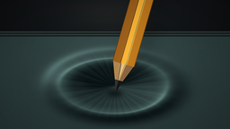
视觉工具实际返回图片 3
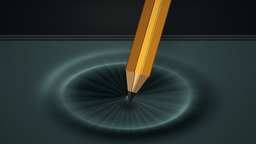
视觉工具实际返回图片 4
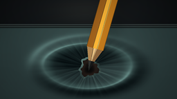
视觉工具实际返回图片 5
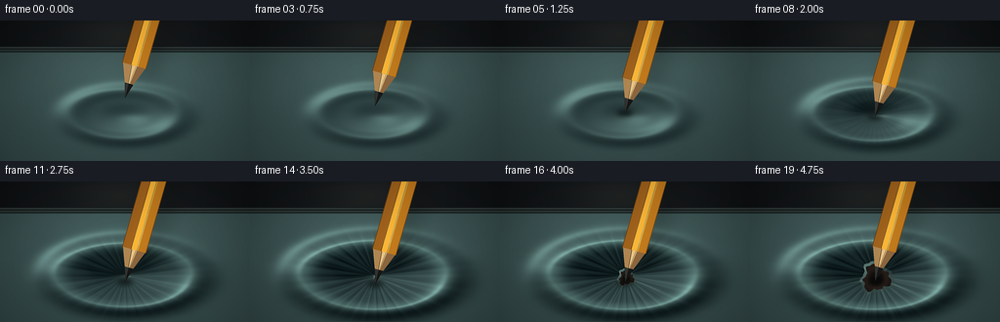
视觉工具实际返回图片 6
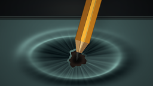
视觉工具实际返回图片 7
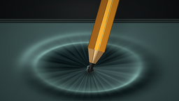
视觉工具实际返回图片 8
视觉工具实际返回图片 9
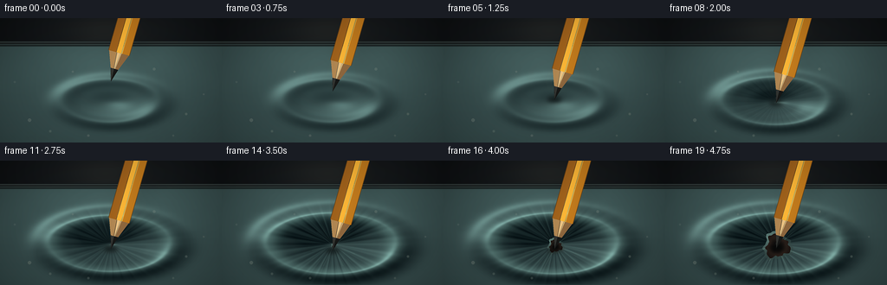
视觉工具实际返回图片 10
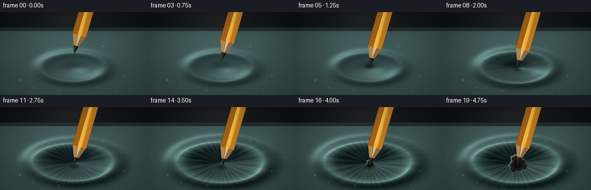
保存候选 5 份；完成命令 19 次；可验证图片返回 10 张。原始 API 响应与完整日志保留在本地。